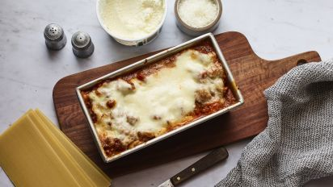

Lasagna

A tasty lasagna pie
This recipie incorporates rustic ingredients such as mozzarella cheese, beef,
spinach and homegrown tomatoes. All of our ingredients used in this recipe
will be bought from daves market.
Ingredients
- Tomatoes
- Ground beef
- Lasanga sheets
- Spinach
- Olive oil
- Oregano
Steps
- Cook the lasagna sheets in a pot until ready, as per package instructions.
- Spread olive oil evenly on the bottom and sides of a deep baking tray.
- Line the bottom of the tray with the lasagna sheets.
- Layer in ground beef, followed by mozzarella, followed by spinach.
- Repeat previous step until you reach the top of the pan.
- Place mozzarella at the top, sprinkle oregano on the top.
- Place Sheet pan in 0ven at 350 c, cook for 25 mins.
- Enjoy!
Home